Công cụ kiểm tra biên hỗ trợ hai loại biên là đường thẳng và đường tròn, sử dụng một nhóm thước cặp để định vị chính xác đặc trưng biên và fit đường thẳng hoặc đường tròn. Dựa trên vị trí biên của thước cặp và kết quả fit, công cụ kiểm tra các dạng sai lệch của biên đường thẳng hoặc đường tròn như vết lõm, vết lồi, vết nứt, đồng thời cung cấp các thông tin liên quan như số lượng, diện tích, kích thước sai lệch để hoàn thành việc kiểm tra tính liên tục của biên. Minh họa kiểm tra biên như Hình 1.
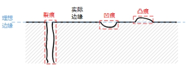
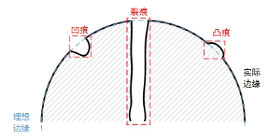
| Phân loại | Tên tham số | Mô tả tham số |
|---|---|---|
| Cửa sổ thuộc tính | Phân cực biên | Phân cực biên là dạng chuyển mức xám tại biên ảnh, gồm 3 loại: phân cực bất kỳ, sáng sang tối và tối sang sáng. |
| Ngưỡng tương phản | Theo mặc định, công cụ thước cặp chỉ sử dụng điểm đánh giá tương phản, tức là chấm điểm dựa trên cường độ tín hiệu biên và xuất ra điểm có biên mạnh nhất. Phạm vi giá trị của ngưỡng tương phản là 0~255. | |
| Nửa độ rộng bộ lọc | Trong quá trình fit đường thẳng (đường tròn), công cụ thước cặp sẽ lọc ảnh để tăng cường thông tin biên, trong đó nửa độ rộng bộ lọc có thể điều chỉnh và giá trị mặc định là 1. | |
| Biên đầu tiên | Chọn “Có” để bật tiêu chí biên đầu tiên nhằm lấy biên tốt nhất. |
|
| Biên mạnh nhất | Chọn “Có” để bật tiêu chí biên mạnh nhất nhằm lấy biên tốt nhất. | |
| Ngưỡng điểm | Sau khi chấm điểm tất cả các biên sẽ thu được điểm đánh giá. Ngưỡng điểm là ngưỡng của điểm đánh giá biên, biên có điểm cao hơn ngưỡng này và có điểm cao nhất sẽ được chọn làm biên fit và biên ứng viên. | |
| Có lọc giá trị ngoại lai hay không | Mục đích của việc lọc giá trị ngoại lai là sàng lọc các biên (điểm) dùng để fit nhằm giảm ảnh hưởng của các biên sai lệch đến kết quả fit. Nguyên tắc sàng lọc dựa trên khoảng cách từ điểm fit đến đường thẳng (đường tròn) fit theo hướng tìm kiếm của thước cặp, các điểm có khoảng cách lớn sẽ được lọc và biên fit được cập nhật theo ngưỡng khoảng cách đã thiết lập. | |
| Ngưỡng khoảng cách lọc | Lọc bỏ các điểm fit có khoảng cách đến đường thẳng (đường tròn) fit lớn hơn ngưỡng lọc. Lấy biên đường thẳng làm ví dụ, theo hướng tìm kiếm của thước cặp, nếu khoảng cách từ điểm fit đến đường fit lớn hơn ngưỡng khoảng cách lọc thì điểm fit đó sẽ bị loại bỏ. Sau khi loại bỏ tất cả các điểm có khoảng cách quá lớn, đường thẳng sẽ được fit lại bằng các điểm fit còn lại. | |
| Có chấm điểm lại hay không | Mục đích của việc chấm điểm lại là cập nhật biên ứng viên nhằm giảm phán định sai do biên nhiễu gây ra. Khi chấm điểm lại, khoảng cách từ biên đến đường fit được bổ sung làm chỉ số đánh giá mới, tất cả các biên trong mỗi thước cặp sẽ được chấm điểm, khoảng cách càng nhỏ thì điểm càng cao, phạm vi điểm là [0,100]. Sau khi chấm điểm lại, tiêu chí “Chấm điểm lại” sẽ thay thế tiêu chí “Biên đầu tiên” (nếu có), sau đó kết hợp với tiêu chí “Biên mạnh nhất” (nếu có) để đánh giá hình học và thu được điểm đánh giá cuối cùng, sau đó trong mỗi thước cặp chọn biên có điểm cao nhất làm biên ứng viên. | |
| Có fit lại hay không | Fit lại là quá trình cập nhật biên fit dựa trên kết quả chấm điểm lại: trước tiên sử dụng biên ứng viên thu được sau khi chấm điểm lại làm biên fit, nếu cần lọc giá trị ngoại lai thì thực hiện giống quá trình fit có lọc giá trị ngoại lai, trước tiên fit đường thẳng (đường tròn), sau đó dựa trên khoảng cách từ biên fit đến đường fit để loại bỏ các biên fit có khoảng cách bất thường và cập nhật biên fit. | |
| Khoảng cách khuyết tật nhỏ nhất | Khoảng cách nhỏ nhất từ biên khuyết tật đến đường fit, nếu nhỏ hơn khoảng cách này thì không được coi là khuyết tật. | |
| Khoảng cách khuyết tật lớn nhất | Khoảng cách lớn nhất từ biên khuyết tật đến đường fit, nếu lớn hơn khoảng cách này thì không được coi là khuyết tật. | |
| Có bật kích thước hay không | Chọn “Có” để hiển thị tham số kích thước nhỏ nhất và kích thước lớn nhất, đồng thời lọc kết quả khuyết tật dựa trên kích thước nhỏ nhất và kích thước lớn nhất. | |
| Có bật diện tích hay không | Chọn “Có” để hiển thị tham số diện tích nhỏ nhất và diện tích lớn nhất, đồng thời lọc kết quả khuyết tật dựa trên diện tích nhỏ nhất và diện tích lớn nhất. | |
| Quy tắc sắp xếp khuyết tật | Có 3 quy tắc sắp xếp: kích thước, diện tích và vị trí, kết quả khuyết tật được sắp xếp theo quy tắc đã chọn. Trong đó, kích thước và diện tích được sắp xếp từ lớn đến nhỏ, vị trí được sắp xếp từ trái sang phải theo hướng thước cặp. | |
| Có lọc khuyết tật bên trái hay không | Theo hướng thước cặp, khuyết tật nằm bên trái đường fit được gọi là khuyết tật bên trái. Khi tham số này chọn “Có”, các khuyết tật bên trái sẽ bị lọc khỏi kết quả khuyết tật. | |
| Có lọc khuyết tật bên phải hay không | Theo hướng thước cặp, khuyết tật nằm bên phải đường fit được gọi là khuyết tật bên phải. Khi tham số này chọn “Có”, các khuyết tật bên phải sẽ bị lọc khỏi kết quả khuyết tật. | |
| Số lượng khuyết tật lớn nhất | Giá trị lớn nhất của số lượng kết quả khuyết tật. Nếu số lượng khuyết tật vượt quá giá trị này, các kết quả khuyết tật xếp ở vị trí phía sau sẽ bị lọc theo quy tắc sắp xếp khuyết tật. | |
| Có kiểm tra khoảng hở hay không | Chọn “Có” để đồng thời kiểm tra khuyết tật và khoảng hở, đồng thời hiển thị các tham số như số lượng khoảng hở lớn nhất, khoảng hở nhỏ nhất, khoảng hở lớn nhất, có bỏ qua khoảng hở đầu mút hay không và quy tắc sắp xếp khoảng hở. | |
| Số lượng khoảng hở lớn nhất | Giá trị lớn nhất của số lượng kết quả khoảng hở. Nếu số lượng khoảng hở vượt quá giá trị này, các kết quả khoảng hở xếp ở vị trí phía sau sẽ bị lọc theo quy tắc sắp xếp khoảng hở. | |
| Khoảng hở nhỏ nhất | Khoảng cách nhỏ nhất từ biên thước cặp đến đường fit, nếu nhỏ hơn khoảng cách này thì không được coi là khoảng hở. | |
| Khoảng hở lớn nhất | Khoảng cách lớn nhất từ biên thước cặp đến đường fit, nếu lớn hơn khoảng cách này thì không được coi là khoảng hở. | |
| Có bỏ qua khoảng hở đầu mút hay không | Chọn “Có” để bỏ qua khoảng hở đầu mút. Khoảng hở đầu mút là khoảng hở nằm ở hai đầu trong phạm vi vùng kiểm tra. | |
| Quy tắc sắp xếp khoảng hở | Có 3 quy tắc sắp xếp: kích thước, diện tích và vị trí, kết quả khoảng hở được sắp xếp theo quy tắc đã chọn. Trong đó, kích thước và diện tích được sắp xếp từ lớn đến nhỏ, vị trí được sắp xếp từ trái sang phải theo hướng thước cặp. | |
| Có hiển thị kết quả fit hay không | Chọn “Có” để hiển thị đường thẳng (đường tròn) fit trong vùng kiểm tra của ảnh. | |
| Có hiển thị vùng khuyết tật hay không | Chọn “Có” để hiển thị khuyết tật trong vùng kiểm tra của ảnh. | |
| Có hiển thị vùng khoảng hở hay không | Chọn “Có” để hiển thị khoảng hở trong vùng kiểm tra của ảnh. | |
| Vùng kiểm tra | Thiết lập vị trí và kích thước của vùng kiểm tra. Rotation biểu thị góc xoay của vùng kiểm tra, Bend biểu thị độ cong của vùng kiểm tra, có thể điều chỉnh để chuyển đổi giữa vùng kiểm tra đường thẳng và đường tròn. | |
| Giới hạn trên số lượng kết quả khuyết tật | Phán định số lượng khuyết tật được kiểm tra. Nếu số lượng khuyết tật vượt quá giới hạn trên đã thiết lập, kết quả thực thi của công cụ là thất bại. Phạm vi giá trị của tham số là [0,100000], có thể thiết lập thành ——, khi đó tham số này không có hiệu lực. | |
| Giới hạn trên số lượng kết quả khoảng hở | Phán định số lượng khoảng hở được kiểm tra. Nếu số lượng khuyết tật vượt quá giới hạn trên đã thiết lập, kết quả thực thi của công cụ là thất bại. Phạm vi giá trị của tham số là [0,100000], có thể thiết lập thành ——, khi đó tham số này không có hiệu lực. | |
| Cửa sổ ảnh | Vùng kiểm tra | Vùng hình chữ nhật hoặc hình vành khuyên tham gia kiểm tra trong ảnh. |
| Ảnh đầu vào | Hiển thị ảnh cần kiểm tra. | |
| Liên kết dữ liệu | Ảnh đầu vào | Chiều rộng, chiều cao và kích thước pixel của ảnh đầu vào, giống với tham số Ảnh đầu vào trong cửa sổ ảnh. |
| Phép biến đổi tuyến tính 2D | Phép biến đổi tịnh tiến, xoay và tỷ lệ của đối tượng so với mẫu. | |
| Giao diện nâng cao | Không |
| Phân loại | Tên tham số | Mô tả tham số |
|---|---|---|
| Cửa sổ giám sát | Ảnh đầu vào | Xuất chiều rộng, chiều cao và kích thước pixel của ảnh. |
| Kết quả khuyết tật | Thông tin về vị trí, kích thước, diện tích của khuyết tật. | |
| Kết quả khoảng hở | Thông tin về vị trí, kích thước, diện tích của khoảng hở. | |
| Số lượng kết quả khuyết tật | Tổng số kết quả khuyết tật sau khi lọc. | |
| Số lượng kết quả khoảng hở | Tổng số kết quả khoảng hở sau khi lọc. | |
| Kết quả thực thi | Kết quả thực thi của công cụ. | |
| Thời gian thực thi | Thời gian thực thi của công cụ. | |
| Cửa sổ ảnh | Ảnh đầu vào | Hiển thị ảnh kết quả sau khi công cụ thực thi, giống với tham số Ảnh đầu vào trong cửa sổ giám sát. |
| Đường thẳng (đường tròn) fit | Khi tham số Có hiển thị kết quả fit hay không trong cửa sổ thuộc tính được chọn là Có, đường thẳng (đường tròn) fit trong vùng kiểm tra của ảnh sẽ được hiển thị. | |
| Kết quả khuyết tật | Khi tham số Có hiển thị kết quả khuyết tật hay không trong cửa sổ thuộc tính được chọn là Có, kết quả khuyết tật trong vùng kiểm tra của ảnh sẽ được hiển thị. | |
| Kết quả khoảng hở | Khi tham số Có hiển thị kết quả khoảng hở hay không trong cửa sổ thuộc tính được chọn là Có, kết quả khoảng hở trong vùng kiểm tra của ảnh sẽ được hiển thị. | |
| Kết quả thực thi | Hiển thị kết quả thực thi của công cụ, thực thi thành công hiển thị “OK”, thực thi thất bại hiển thị “NG”, giống với tham số Kết quả thực thi trong cửa sổ giám sát. | |
| Điểm bắt đầu khuyết tật | Xuất điểm bắt đầu của tất cả khuyết tật. | |
| Điểm kết thúc khuyết tật | Xuất điểm kết thúc của tất cả khuyết tật. | |
| Điểm bắt đầu khoảng hở | Xuất điểm bắt đầu của tất cả khoảng hở. | |
| Điểm kết thúc khoảng hở | Xuất điểm kết thúc của tất cả khoảng hở. | |
| Liên kết dữ liệu | Kết quả khuyết tật | Xuất thông tin về vị trí, kích thước, diện tích của khuyết tật để các công cụ phía sau sử dụng, giống với tham số Kết quả khuyết tật trong cửa sổ giám sát. |
| Kết quả khoảng hở | Xuất thông tin về vị trí, kích thước, diện tích của khoảng hở để các công cụ phía sau sử dụng, giống với tham số Kết quả khoảng hở trong cửa sổ giám sát. | |
| Điểm bắt đầu khuyết tật | Xuất điểm bắt đầu của tất cả khuyết tật. | |
| Điểm kết thúc khuyết tật | Xuất điểm kết thúc của tất cả khuyết tật. | |
| Điểm bắt đầu khoảng hở | Xuất điểm bắt đầu của tất cả khoảng hở. | |
| Điểm kết thúc khoảng hở | Xuất điểm kết thúc của tất cả khoảng hở. |
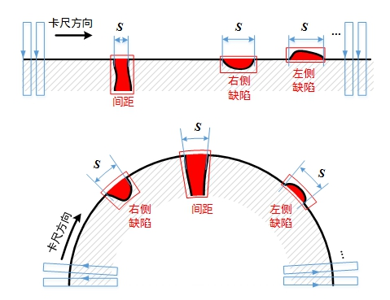
Phân cực biên của thước cặp được xác định dựa trên dạng chuyển mức xám tại biên ảnh. Như Hình 2, theo chiều dương trục Y của thước cặp (hướng mũi tên màu đỏ), nếu mức xám tại biên ảnh chuyển từ sáng sang tối thì chọn phân cực biên Sáng sang tối, ngược lại chọn Tối sang sáng, nếu không xác định được dạng chuyển mức xám tại biên ảnh thì chọn Phân cực bất kỳ.
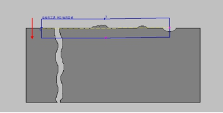
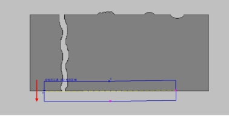
Khái niệm và phương pháp tính các đại lượng vật lý như kích thước, diện tích, vùng và vị trí của sai lệch được trình bày trong bảng dưới đây.
| Loại sai lệch | Hình minh họa | Mô tả |
|---|---|---|
| Khuyết tật đường thẳng | 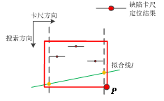 |
Kích thước: khoảng cách giữa các giao điểm của thước cặp khuyết tật bên trái và bên phải với đường fit; diện tích: tích của giá trị trung bình khoảng cách từ điểm ứng viên của thước cặp khuyết tật đến đường fit (theo hướng tìm kiếm của thước cặp) với kích thước; vùng: hình chữ nhật affine, như vùng màu đỏ trong hình; vị trí: góc dưới bên phải của vùng khuyết tật |
| Khuyết tật đường tròn | 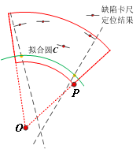 |
Kích thước: khoảng cách theo cung tròn giữa các giao điểm của thước cặp khuyết tật bên trái và bên phải với đường tròn fit; diện tích: tích của giá trị trung bình khoảng cách từ điểm ứng viên của thước cặp khuyết tật đến đường tròn fit (theo hướng tìm kiếm của thước cặp) với kích thước; vùng: hình quạt, như vùng màu đỏ trong hình; vị trí: góc dưới bên phải của vùng hình quạt |
| Khoảng hở đường thẳng | 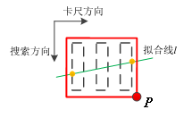 |
Kích thước: khoảng cách giữa các giao điểm của thước cặp khoảng hở bên trái và bên phải với đường fit; diện tích: tích của chiều dài tìm kiếm của thước cặp với kích thước; vùng: hình chữ nhật affine, như vùng màu đỏ trong hình; vị trí: góc dưới bên phải của vùng khuyết tật |
| Khoảng hở đường tròn | 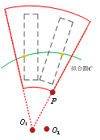 |
Kích thước: khoảng cách theo cung tròn giữa các giao điểm của thước cặp khoảng hở bên trái và bên phải với đường tròn fit; diện tích: tích của chiều dài tìm kiếm của thước cặp với kích thước; vùng: hình quạt, như vùng màu đỏ trong hình; vị trí: góc dưới bên phải của vùng hình quạt |
Lần lượt chấm điểm tất cả các biên của từng thước cặp, lấy biên có điểm đánh giá cao nhất làm biên fit và biên ứng viên. Công cụ kiểm tra biên cung cấp hai tiêu chí “Biên đầu tiên” và “Biên mạnh nhất” để đánh giá biên. Phải chọn ít nhất một trong hai tiêu chí, nếu đồng thời sử dụng cả hai tiêu chí thì lấy trung bình nhân của điểm đánh giá từ hai tiêu chí làm điểm đánh giá.
Trong đó, tiêu chí “Biên đầu tiên” sử dụng độ lệch tâm (tức là độ lệch vị trí của biên so với vị trí tâm của vùng chiếu, giá trị có thể dương hoặc âm) làm chỉ số đánh giá, độ lệch tâm càng nhỏ thì điểm càng cao; tiêu chí “Biên mạnh nhất” sử dụng biên độ biên (tức là độ chênh mức xám của pixel ở hai phía của biên) làm chỉ số đánh giá, biên độ biên càng lớn thì điểm càng cao. Phạm vi giá trị điểm là [0,100].
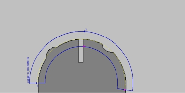
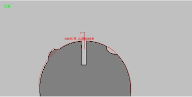
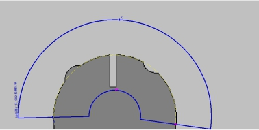
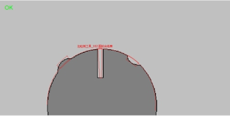
Công cụ kiểm tra biên cần được sử dụng kết hợp với công cụ phân tích mảng và công cụ phân tích kết quả kiểm tra đặc trưng biên. Chọn thuộc tính kiểu dữ liệu của công cụ phân tích mảng là “EdgeDeviation” để lấy đầu ra kết quả khuyết tật và kết quả khoảng hở của công cụ kiểm tra biên, sau đó sử dụng công cụ phân tích kết quả kiểm tra đặc trưng biên để phân tích kết quả đầu ra của công cụ phân tích mảng.
Có thể lấy trực tiếp dữ liệu kết quả khuyết tật và số lượng kết quả khoảng hở của công cụ kiểm tra biên, kiểu dữ liệu là int.
Tham khảo “\Samples\边特征检测工具结果解析.gvp”.
参见“\Samples\边特征检测工具结果解析.gvp”。